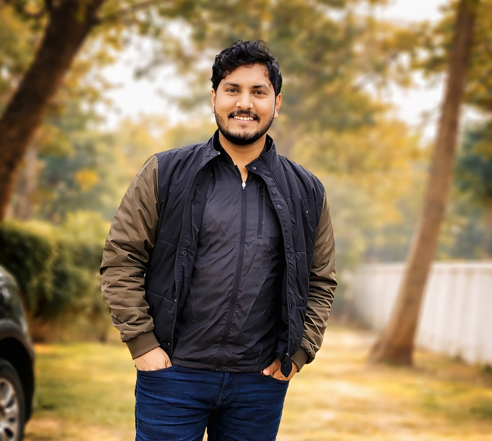

Concepts, derivations, lecture notes and study resources.
AI | PHYSICS | RESEARCH | Academics | SOCIAL THINKER
Dr. Shyam Babu
Assistant Professor of Physics
RHS P.G. College, Singramau, Jaunpur, Uttar Pradesh
Ph.D. (IIT BHU) · Physics · Materials Science · Nanomagnetism · Spintronics
Academic resources, research work, teaching materials and study resources for students, researchers and competitive-exam aspirants.

ABOUT
Academic Profile
Dr. Shyam Babu is a Materials Physicist working at the intersection of magnetism, nanotechnology and next-generation information technologies. His research focuses on nanomagnetism, spintronics and non-collinear magnetic materials, with particular interest in designing energy-efficient materials for future data-storage and spin-based technologies.
His research focuses on nanomagnetism, spintronics and non-collinear magnetic materials, with particular interest in energy-efficient magnetic materials for future data-storage and spin-based technologies.
He earned his Ph.D. from IIT (BHU), Varanasi, and has gained research experience through academic collaborations and research engagements with leading institutions including IISc Bengaluru, IISER Pune, NISER Bhubaneswar, IIT Delhi, IIT Roorkee, HZB Berlin (Germany), and the University of Manitoba (Canada). His research experience spans single-crystal and thin-film growth, magnetic characterization and advanced materials research.
Currently, he serves as Assistant Professor and Head of the Department of Physics at RHS PG College, Jaunpur, Uttar Pradesh, India, where he teaches Physics and mentors students pursuing academic and competitive-examination goals.
Competitive Examination Highlights:
National-Level:
GATE (2016) • JEST (2016) • CSIR-JRF (2017) • Direct CSIR-SRF/RA (2019)
State & Government Examinations:
UPSC GSI Prelims — Qualified • GIC Prelims — Qualified • Ashram Paddhati Prelims — Qualified • UPPSC GDC — Interview (2021) • UPESSC PGT — Interview (2021) • UPHESC (Advt. 51) — Selected (2022) • Government Polytechnic — Selected (2022)
Beyond research and teaching, he is passionate about AI, scientific thinking, education, motivation and empowering young minds. Through his academic work and public outreach, he aims to make Physics more accessible, inspire curiosity and connect scientific ideas with the challenges of tomorrow.
Academic-Vision
AI | Physics | Research | Empowering Young Minds | Social Thinking | Motivation
Turning knowledge into ideas, ideas into innovation, and innovation into impact.
This website brings together academic information, research work and educational resources for students and researchers.
TEACHING
Teaching & Learning
Advanced Physics topics and academic material.
Selected resources for GATE, UGC-NET and other examinations.
RESEARCH
Research & Publications
Research Interests
Materials Science, nanomagnetism, skyrmions and spintronic materials.
Research Papers
Journal publications, DOI information and selected academic work.
Projects & Collaborations
Research proposals, collaborations and academic activities.
Study & Academic Repository
All Resources
Loading repository…
No resources found. Upload a PDF to one of the study-material folders and refresh.
CONNECT
Academic Profiles
For academic enquiries, teaching resources, research collaboration and professional communication.
✉️ Academic Email
rhsphysicsdept@gmail.com
rhsphysicsdept@gmail.com
🎓 Institutional / Research Email
shyamb.rs.mst16@itbhu.ac.in
shyamb.rs.mst16@itbhu.ac.in
📞 Contact
+91 9792738080
+91 9792738080